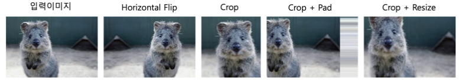
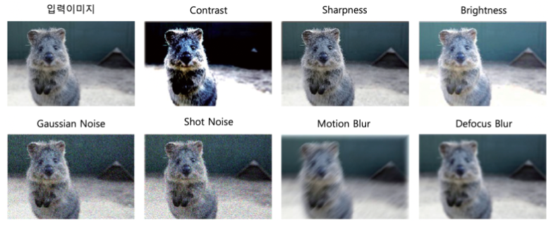
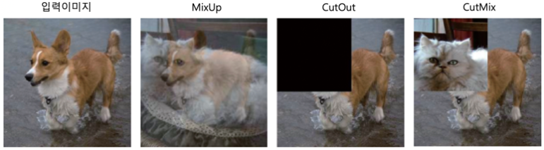
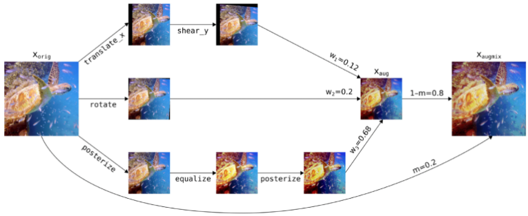
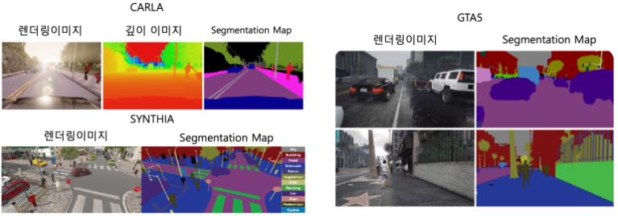
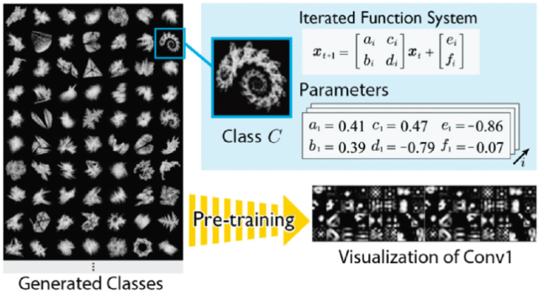
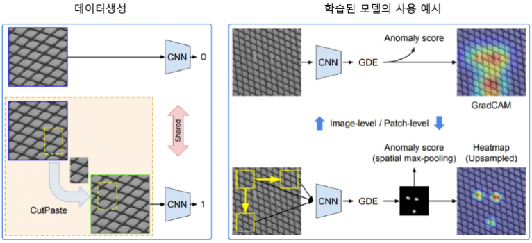
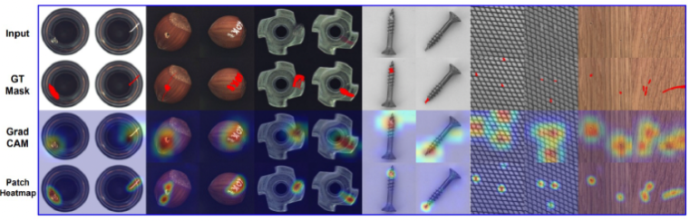
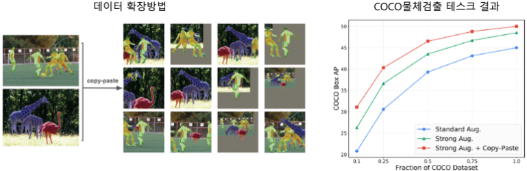

- 이미지 데이터를 수집하고, Annotation하는 비용은 Dataset에 따라 매우 커질 수 있음
- 제한된 데이터로, 모델을 견고하게 학습시키기 위한 기법에 대해 설명함
- Data Augmentation
- 시뮬레이션을 활용해 Annotation이 포함된 데이터 생성 기술
- 제한된 데이터로, 모델을 견고하게 학습시키기 위한 기법에 대해 설명함
Data Augmentation
-
적절하게 적용하면, 정확도가 크게 향상될 수 있음
- 대규모 모델을 학습할 때 필수적이고, ViT처럼 Overfitting이 일어나기 쉬운 모델에서 효과가 뛰어남
-
데이터 양 증가뿐 아니라, 이미지의 작은 변화에도 안정적으로 인식할 수 있게 해준다는 측면에서도 중요함
| 참고 : Image Augmentation for ML experiments -
기본 기법

-
Horizontal Flip: 이미지를 수평 방향으로 뒤집음 -
Crop: 이미지의 일부를 잘라냄 -
Pad: 이미지를 일정 크기로 맞출 때, 남는 공간을 특정 값으로 채우는 방법 -
Resizing: 이미지 축소 또는 확대 -
단, 적용 시 본래 Content를 훼손하지 않아야 함
-
-
픽셀값 변화

Contrast: 어두운 부분과 밝은 부분의 차이 부각Sharpness: 이미지의 Edge를 강조Brightness: 이미지 밝기 변화Gaussian Noise: 픽셀 단위로 랜덤한 값인 Noise를 삽입Shot Noise: Poisson Distribution에서 Noise를 Sampling하는 방법Motion Blur: 움직임에 의한 Blur 효과Defocus Blur: 초점이 제대로 맞지 않은 듯한 효과
-
추가적인 기법

-
MixUp-
두 이미지의 픽셀 값과 label을 각각 선형 결합하는 기법
-
- 선형 결합 수식
- : 입력 이미지
- : one-hot label
- : 혼합 비율
- \lambda L(h(\tilde{x}),\,y_i)\,_\,(1\,-\,\lambda)L(h(\tilde{x}),\,y_j)
- : Cross-Entropy Loss
- : 모델 출력
-
-
ViT 등 모델 학습에 사용되는 강력한 기법
-
Adversarial Sample에 대한 견고성을 향상시킬 수 있음
-
Softmax Function의 score가 더 높은 Confidence를 갖기 쉬움
-
-
Cutout- 일부 사각 영역에 픽셀 값을 랜덤 또는 고정값으로 채워 제거하는 방식
- Dropout처럼, 정규화 효과를 얻을 수 있음
-
CutMixCutout과MixUp을 결합한 기법- 일부 사각 영역에 다른 이미지의 해당 영역을 잘라 붙임
- Image Classification, Object Detection 등 Task에서
MixUp보다 우수한 성능을 보임
-
-
주의할 점
-
이미지의 외관(Appearance)를 과하게 변화시키지 않는지
- Data Augmentation을 과하게 적용하면, 기존 이미지와 크게 달라질 수 있음
domain shift현상 : train data와 test data의 feature가 달라 발생하는 Accurary 저하
- Data Augmentation을 과하게 적용하면, 기존 이미지와 크게 달라질 수 있음
-
Dataset Size와 Model Size의 관계
- 표현 능력이 제한된 소형 모델에 Data Augmentation을 적용하면, train이 제대로 이뤄지지 않음
-
Data Augmentation이 Annotation이 상이한지
- Augmetation한 Data가 해당 Data의 Annotaion과 상이한 경우
- 3가지 문제를 방지하기 위해,
AutoAugmentation을 사용함AutoAugmentation: 어떤 기법을 어떤 확률과 강도로 적용할지 자동으로 탐색
-
-
탐색 방법
-
AutoAugmentation은 16종의 Data Augmentation 기법에 대해 각각 10단계의 강도를 설정하고, 적용할 확률을 11단계로 표현함- 이를 하나의 Policy로 정의하고, 5가지 Policy를 탐색함
- Policy는 Data Augmentation을 어떤 방식으로 적용할지 정해 놓은 규칙들
- 경우의 수 :
- 이를 RL을 통해 탐색하고, 탐색된 Policy를 이용해 모델을 train
- 이를 하나의 Policy로 정의하고, 5가지 Policy를 탐색함
-
단,
AutoAugmentation기법은 탐색 공간이 너무 커 많은 비용이 소모됨- 이를 극복하기 위해
RandAugment가 등장함RandAugment: 탐색 공간을 크게 축소하면서, 이미지 다양성을 보장
- 이를 극복하기 위해
-
RandAugmentGrid Search사용
| 참고 : Grid Search- 탐색 공간이 매우 작음에도,
AutoAugmentation과 유사한 Accuracy를 입증함
-
-
Robustness 보장
-
Data Augmentation의 가장 큰 장점은, Domain 변화에 대해 모델의 Robustness를 높일 수 있다는 것
-
AugMix

-
모델의 Robustness를 향상시키는 대표적 기법
-
한 이미지에 대해 Augmentation을 여러 번 수행한 뒤, 결과를 원본과 섞는 기법
-
장점
- 단일 이미지에 대해 다양한 Data Augmentation 요소를 적용할 수 있음
- 원본 이미지와 결합하기에, 원래 Content의 손실을 줄임
-
Smoothness를 보장해 Accuracy를 향상 시킴Smoothness: 입력이 바뀌어도 예측 confidence가 크게 변하지 않는 것
ex)
: 에서 Data Augmentation으로 생성한 이미지
: 모델의 Softmax Output
→ 원본과 생성한 이미지 1가 서로 유사하도록 모델을 학습시킴
-
이
Soft Label처럼 작용해 Accuracy 향상에 기여함Soft Label: 여러 Class에 확률이 분산된 label
ex)Hard Label: 정답이 1인 one-hot label
ex)
-
-
Data Generation
-
시뮬레이션 환경에 필요한 데이터 생성
-
시뮬레이션 환경에선, 데이터 생성 과정이 명확하기에 Annotation 수행이 원활함
-
parameter를 변환해 대량의 데이터를 생성할 수 있음
ex) 자율주행 시뮬레이션 Data

-
장점
- 더 적은 시간으로 Annotation Data를 얻을 수 있음
-
단점
- 시뮬레이션 환경 구축에 높은 비용이 소모됨
- 환경 내 3D 모델링은 보통 수작업으로 이뤄짐
-
시뮬레이션을 활용한 기법은 Annotation 비용이 매우 크거나, 정확한 Annotation이 어려운 상황에 고려됨
- 그 중 하나로,
3D Pose Estimation에 사용됨- RGB 이미지나, Video를 입력 받아 사람의 자세를 3차원 정보로 인식하는 것
- 그 중 하나로,
-
문제점
Domain Gap문제 발생Domain Gap: 시뮬레이션과 현실이 완전히 동일하지 않기에, 모델을 test할 때 Accuracy가 크게 저하되는 현상
-
Domain Adaptation개선- 실제 데이터를 활용해 Annotation Data에 의존하면서, 일반화 성능을 높임
Adversarial Learning으로 시뮬레이션 이미지를 실제 이미지와 유사하게 변환Pseudo-Label로 unlabeled인 실제 데이터를 활용- 모델의 예측 결과를 unlabeled data의 임시 label로 사용해 다시 학습하는 방법
Domain Randomization- 실제 이미지를 배경으로 잘라 붙여 일반화 성능을 개선하는 방법
-
-
Formula-Driven Data Generation

-
Pre-trained 모델을 위한 Data Generation 방법
- 지금까진 Data Generation은 Downstream Task에 대한 모델 학습이 목적이었음
-
수식을 통해,
Fractal이미지 생성Fractal: 비슷한 모양이 크기를 바꿔가며 반복해 나타나는 구조- parameter에 따라 다양한 형태의 이미지 생성
-
-
수식에 기반해 point sequence 생성 후 이미지 생성
- point sequence : 여러 점의 좌표를 일정한 순서로 나열한 데이터
-
: 현재 점의 2D 좌표
-
: 수식을 한 번 더 적용한 더 뒤 다음 점의 좌표
-
: 이번에 선택된 변환 번호
-
: 점을 회전확대, 축소기울임 등으로 변형하는 값
-
: 변형된 점을 x축, y축으로 이동시키는 값
-
-
-
Labled Data Generation
-
생성한 이미지는 실제 input 이미지와 feature가 다를 수 있음
- 실제 이미지를 활용해 새로운 labled data를 만들고자 함
-
CutPaste

Anomaly Detection에서 사용하는 기법 중 하나- 기존 정상 데이터를 변경해 인위적으로 Anomaly data를 만듦
- 정상적인 이미지의 feature patch를 랜덤하게 crop해, 다른 위치에 붙이는 방식

-
CopyPaste

Instance Segmentation기반Object Dectection에서 사용하는 기법- Object를 Segment Mask 기준으로 crop해, 다른 이미지에 붙여 새로운 이미지를 만드는 방법
- 데이터 부족 문제를 해결할 수 있음
-
| 다음 : 데이터중심 AI 입문 - 7.VLM